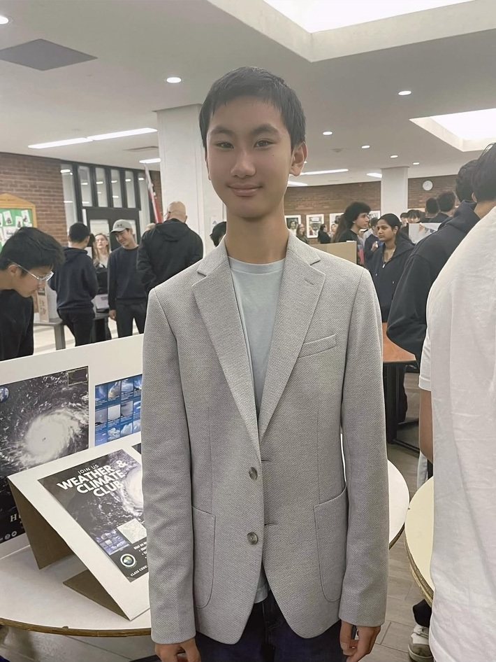
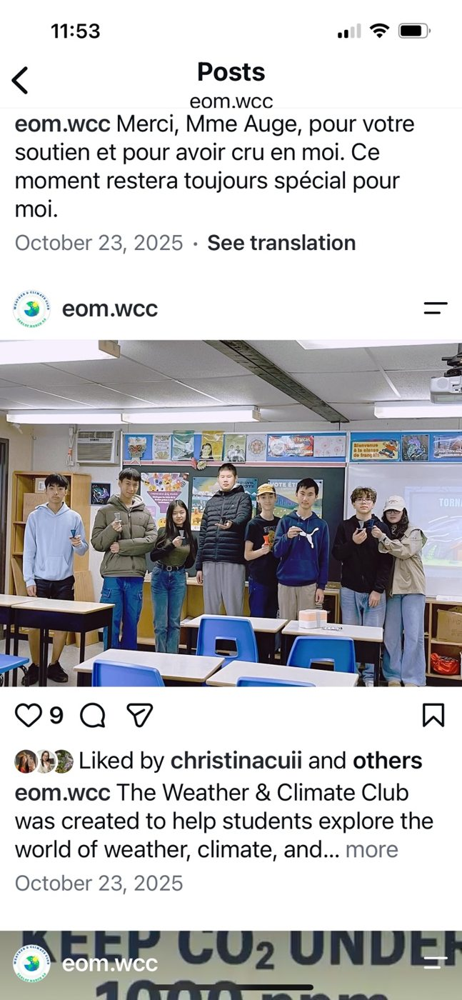
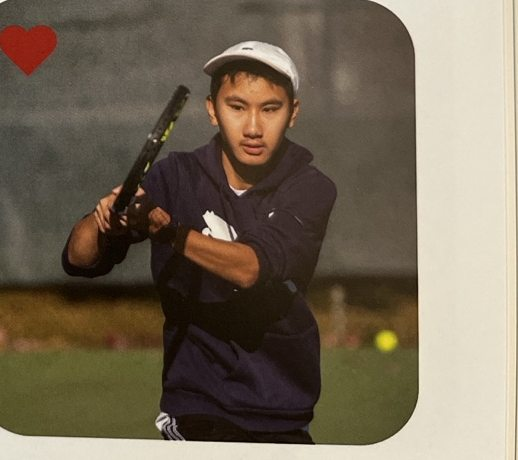

Exploring the atmosphere, building creative projects, and growing through sports and music.
Explore my journey ↓
I'm Kevin, a high school student interested in atmospheric science, technology and creative problem-solving. I enjoy turning questions into projects, sharing what I learn and challenging myself through tennis and music.
This portfolio is a record of what I've explored, created and learned along the way.
Making atmospheric science accessible to other students.
From singles to doubles and learning to grow together.
Learning to listen, contribute and perform together.
Turning curiosity into experiments and applications.
In Grade 9, I noticed that my school had clubs for computer science, gaming and health, but none focused on weather and climate. I started the Weather & Climate Club to share this interest with other students.
Our activities introduced weather concepts, tornado models, weather stations, lightning detection and air quality monitoring. Preparing demonstrations helped me learn how to make science understandable and engaging.
School club website ↗ · Read the full story ↗ · Club Instagram ↗
Club activity · School Weather & Climate Club

Varsity Tennis · School yearbook
I earned a place on my school's varsity tennis team in Grades 9 and 10 and trained twice a week. In Grade 10, my coach assigned me to doubles.
My partner and I arranged extra practice sessions to improve our positioning, serving and net play. We talked after practice about what worked and what to improve. Encouraging each other to focus on the next ball helped us stay positive under pressure. We advanced to the regional finals.
Read the full story ↗I play saxophone in my school band. Rehearsing and performing together have taught me to listen carefully and contribute to a shared sound.
Our band achieved the Gold standard at Capital Region Musicfest and earned an invitation to Nationals. Performance photos will be added later.
From exploring lightning sensors to creating a chemistry element card game, I enjoy testing ideas, discovering limitations and sharing what I learn.
Explore Kevin Apps ↗